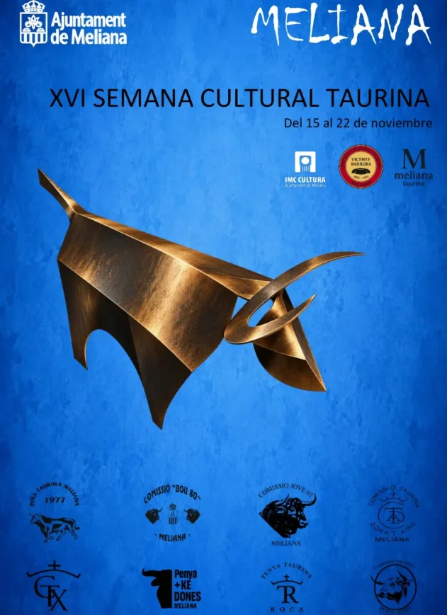
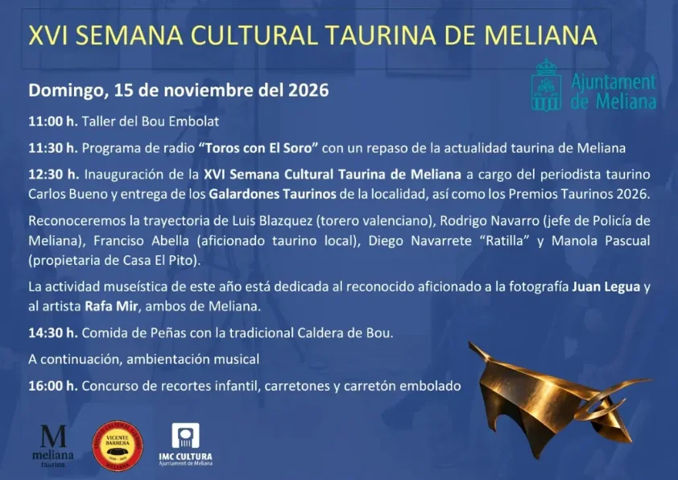

Agenda Taurina
Agenda TaurinaMeliana celebra del 15 al 22 de noviembre su XVI Semana Cultural Taurina
Se inaugura el domingo 15 con la entrega de galardones a Luis Blázquez, Paco Abella, Diego Navarrete «Ratilla», Manola Pascual y Rodrigo Navarro

Meliana Taurina, el Círculo Cultural Taurino Vicente Barrera y el Ayuntamiento de Meliana organizan del 15 al 22 de noviembre la XVI Semana Cultural Taurina, con las peñas de la localidad como protagonistas.
Como cada año, la Semana Cultural nace de las propias peñas, que son las que dan sentido y contenido a las actividades: la Penya Taurina Meliana 1977, la Comissió Bou 80, la Comissió Jove 92, la C.T. Donat Aire, Els Xiquets, la C.T. Horta Nord y la Penya +KeDones, entre otras.
Domingo 15 de noviembre: inauguración y galardones
- 11:00h Taller del Bou Embolat.
- 11:30h Programa de radio «Toros con El Soro», presentado por Vicente Ruiz «El Soro» y Eva Rogel, con un repaso a la actualidad taurina de Meliana desde la sede de Meliana Taurina.
- 12:30h Inauguración de la XVI Semana Cultural Taurina a cargo del periodista taurino Carlos Bueno, con la entrega de los galardones.
- 14:30h Comida de peñas con la tradicional Caldera de Bou y, al terminar, ambientación musical con Miguel Ruiz.
- 16:00h Concurso de recortes infantil, carretones y carretón embolado.

Los galardones de 2026
- Galardón Vicente Barrera Cambra: Rodrigo Navarro, «Rodri», jefe de la Policía de Meliana.
- Galardón Peña La Forca: Manola Pascual, propietaria de Casa El Pito.
- Galardón Meliana Taurina: Luis Blázquez, torero valenciano.
- Galardón Camp del Raspí: Francisco «Paco» Abella, fundador de la histórica Comissió El Lío, abonado de la plaza de toros de Valencia y alma del Club Taurino de Foios. Sus hijas y nietos forman parte de las peñas de Meliana.
- Galardón Peñas Taurinas de Meliana: Diego Navarrete «Ratilla», recortador que empezó de niño con los carretones en Meliana y ha llevado su oficio a plazas de América.
También se entregará la Insignia de Oro de Meliana Taurina.
Exposición
La exposición de este año está dedicada al aficionado a la fotografía Juan Legua y al artista Rafa Mir, ambos de Meliana.
El programa del resto de la semana se publicará en las redes de Meliana Taurina.
Fuente: @melianataurinaa (Meliana Taurina, Instagram).
Ver el calendario completo Ver todas las noticias